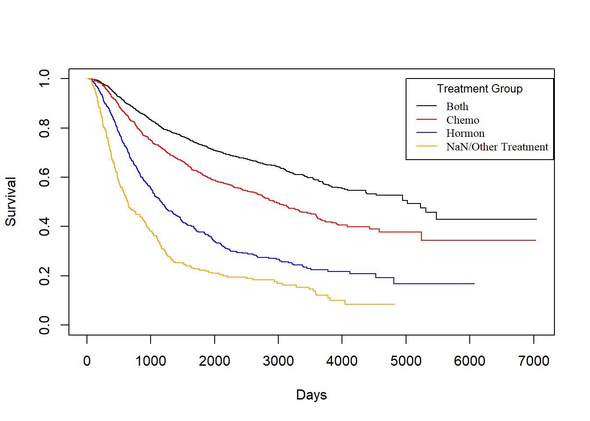
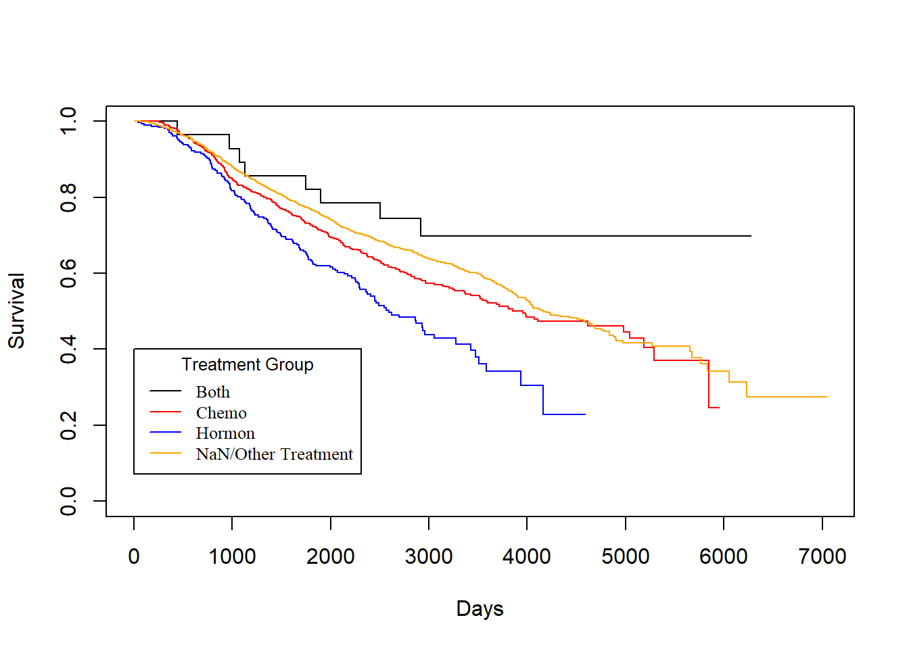

Chapter3 Survival
3.1 Loading Data
3.2 Kaplan-Miere
KM_None_Death <- survfit(Surv(dtime, death) ~ 1, data = rotterdam)
plot(KM_None_Death, conf.type = "plain", col = "blue", xlab="Days", ylab="Survival")
KM_None_Recur <- survfit(Surv(rtime, recur) ~ 1, data = rotterdam)
plot(KM_None_Recur, conf.type = "plain", col = "red", xlab="Days", ylab="Survival")
KM_Treatment_Death <- survfit(Surv(dtime, death) ~ Treatment, data = rotterdam)
plot(KM_Treatment_Death, conf.int = FALSE, col = c("blue", "red", "purple", "green"), xlab="Days", ylab="Survival", lty=1:4)
legend(1, 0.4, legend=c("Both", "Chemo","Hormon", "NaN/Other Treatment"),
col=c("blue", "red", "purple", "green"), lty=1:4, cex=0.8,
title="Treatment Group", text.font=6)
KM_Treatment_Recur <- survfit(Surv(rtime, recur) ~ Treatment, data = rotterdam)
plot(KM_Treatment_Recur, conf.int = FALSE, col = c("blue", "red", "purple", "green"), xlab="Days", ylab="Survival", lty=1:4)
legend(1, 0.4, legend=c("Both", "Chemo","Hormon", "NaN/Other Treatment"),
col=c("blue", "red", "purple", "green"), lty=1:4, cex=0.8,
title="Treatment Group", text.font=6)
3.3 Cox-PH
## Call:
## coxph(formula = Surv(dtime, death) ~ Treatment, data = rotterdam)
##
## coef exp(coef) se(coef) z p
## TreatmentChemo 0.6544 1.9240 0.3594 1.821 0.06863
## TreatmentHormon 1.0474 2.8502 0.3633 2.883 0.00394
## TreatmentNaN/Other Treatment 0.5142 1.6723 0.3554 1.447 0.14792
##
## Likelihood ratio test=36.3 on 3 df, p=6.464e-08
## n= 2982, number of events= 1272## Call:
## coxph(formula = Surv(dtime, death) ~ Treatment + size + factor(grade) +
## age, data = rotterdam)
##
## coef exp(coef) se(coef) z p
## TreatmentChemo 0.636643 1.890125 0.359997 1.768 0.077
## TreatmentHormon 0.587652 1.799759 0.366603 1.603 0.109
## TreatmentNaN/Other Treatment 0.380423 1.462903 0.357122 1.065 0.287
## size20-50 0.600161 1.822413 0.063617 9.434 < 2e-16
## size>50 1.130088 3.095930 0.087515 12.913 < 2e-16
## factor(grade)3 0.372575 1.451468 0.070112 5.314 1.07e-07
## age 0.016923 1.017067 0.002525 6.702 2.05e-11
##
## Likelihood ratio test=338.9 on 7 df, p=< 2.2e-16
## n= 2982, number of events= 1272## Call:
## coxph(formula = Surv(rtime, recur) ~ Treatment, data = rotterdam)
##
## coef exp(coef) se(coef) z p
## TreatmentChemo 0.4347 1.5445 0.2829 1.537 0.1244
## TreatmentHormon 0.5451 1.7248 0.2880 1.893 0.0584
## TreatmentNaN/Other Treatment 0.1975 1.2183 0.2791 0.707 0.4793
##
## Likelihood ratio test=26.3 on 3 df, p=8.254e-06
## n= 2982, number of events= 1518## Call:
## coxph(formula = Surv(rtime, recur) ~ Treatment + size + factor(grade) +
## age + year, data = rotterdam)
##
## coef exp(coef) se(coef) z p
## TreatmentChemo 0.413675 1.512366 0.283513 1.459 0.14454
## TreatmentHormon 0.617837 1.854912 0.293409 2.106 0.03523
## TreatmentNaN/Other Treatment 0.329930 1.390871 0.280623 1.176 0.23971
## size20-50 0.485095 1.624329 0.056895 8.526 < 2e-16
## size>50 0.936211 2.550299 0.084168 11.123 < 2e-16
## factor(grade)3 0.426253 1.531509 0.064253 6.634 3.27e-11
## age -0.006783 0.993240 0.002298 -2.952 0.00316
## year -0.033135 0.967408 0.009072 -3.653 0.00026
##
## Likelihood ratio test=258.9 on 8 df, p=< 2.2e-16
## n= 2982, number of events= 1518## Call:
## coxph(formula = Surv(dtime, death) ~ pgr + er, data = rotterdam)
##
## coef exp(coef) se(coef) z p
## pgr -6.777e-04 9.993e-01 1.269e-04 -5.339 9.35e-08
## er 2.402e-04 1.000e+00 9.661e-05 2.486 0.0129
##
## Likelihood ratio test=35.07 on 2 df, p=2.42e-08
## n= 2982, number of events= 1272